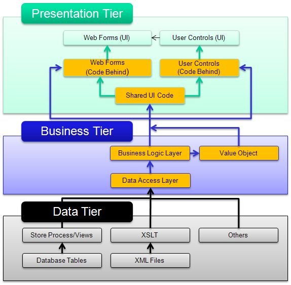

A Complete Guide to Core Internet & Web Concepts
Multitier architecture, also known as n-tier architecture, is a design approach for building software applications where different components of the system are separated into distinct layers — or "tiers" — each with its own specific role. Rather than building everything as one big block of code, the application is divided into logical parts that can each be developed, maintained, and scaled independently.
The most common version of this is the three-tier architecture, which separates an application into a presentation layer (what the user sees), a logic layer (the rules and processing), and a data layer (the database).

The Presentation Tier (also called the front end) is what the user directly interacts with — the web pages, buttons, forms, and visual elements. This is the part built with HTML, CSS, and JavaScript that runs in the browser.
The Logic Tier (also called the application tier or back end) is the middle layer. It processes user input, applies business rules, performs calculations, and makes decisions about what data to retrieve or store. This is where server-side languages like Python, PHP, or Java typically run.
The Data Tier is the database layer. It stores all the application's data and responds to queries from the logic tier. Common database systems include MySQL, PostgreSQL, and MongoDB.
Separating an application into tiers brings many advantages. Each tier can be updated or replaced without affecting the others. Different teams can work on different tiers simultaneously. If one part of the system needs more resources (like the database getting too many requests), it can be scaled up independently without rebuilding the whole application.